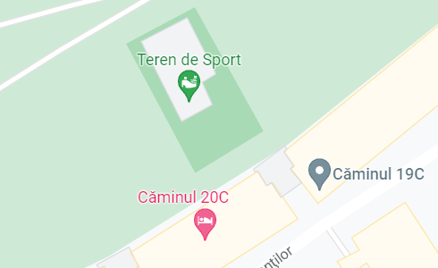

Primul date și prima ceartă 😖
Era o seară minunată de iarnă, cu un frig de nedescris și noi doi, în foișorul
din Complex. Dar cine mai simțea frigul, când stăteam lângă tine și mă
încălzeai?
Petrecusem clipe frumoase, până ai reușit tu să le strici..
off, bărbații ăștia 🙄